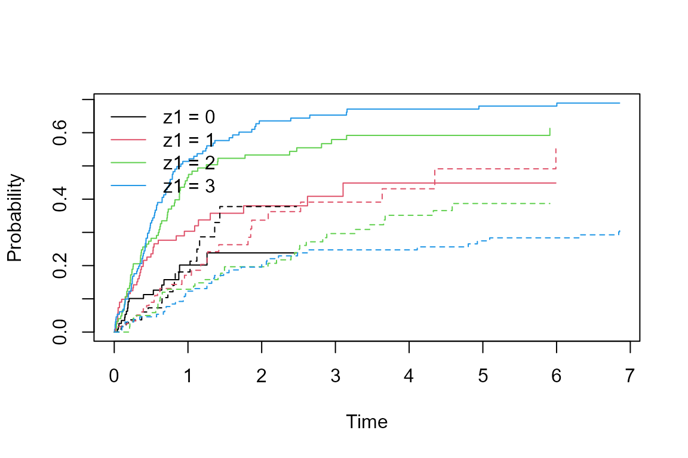
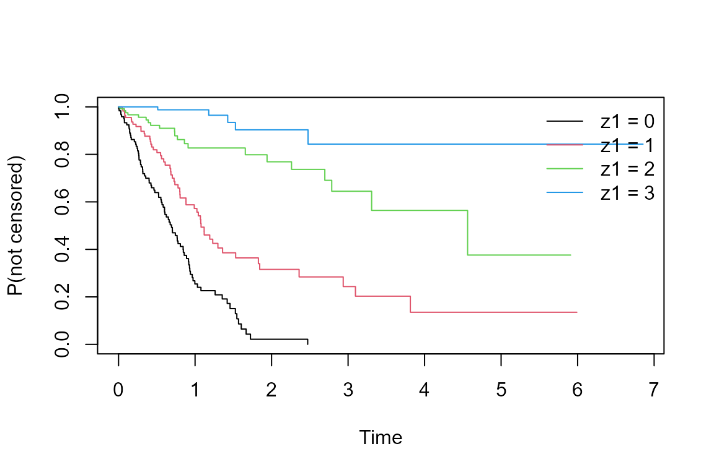
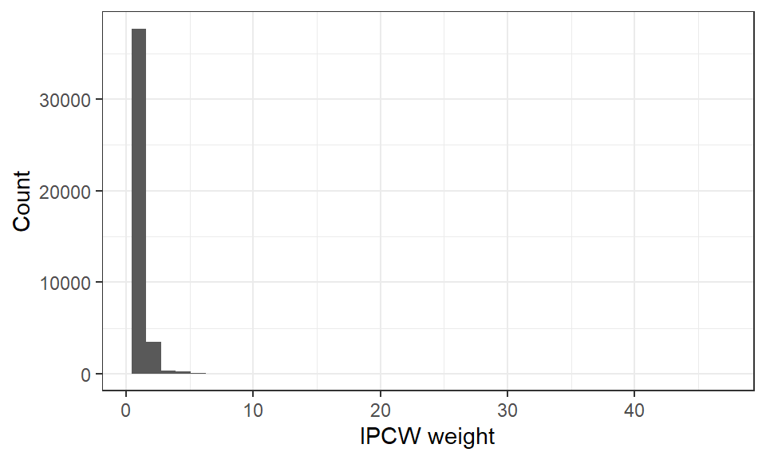
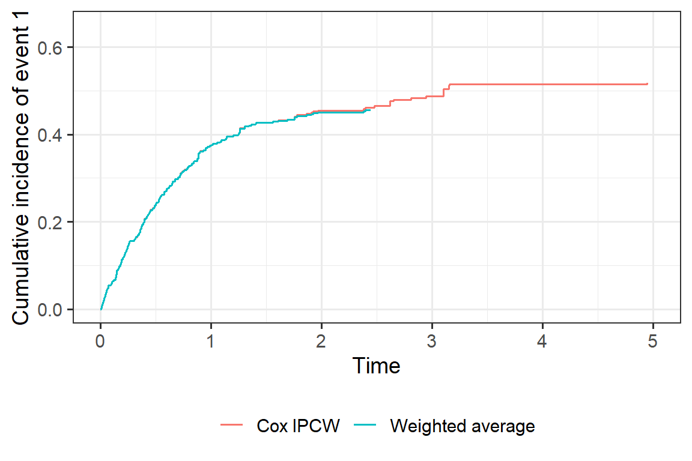

competing-risks-guided-example.RmdThis vignette demonstrates IPCW methods for competing risks data. We simulate a prostate cancer dataset where metastasis (event_1) and death (event_2) are competing risks, and PSA quartile at baseline (z1) both predicts metastasis risk and drives informative censoring.
sim_data_CR() generates competing risks data under a sub-distribution hazard model. The covariate z1 is a four-level factor (PSA quartile). We use baseline-dependent censoring so that censoring is informative.
# Cumulative incidence by PSA quartile
plot(survfit(Surv(t, delta) ~ z1, data = dat),
col = 1:4, lty = rep(1:2, each = 4),
xlab = "Time", ylab = "Probability")
legend("topleft", legend = paste("z1 =", 0:3), col = 1:4, lty = 1, bty = "n")
# Censoring distribution by PSA quartile
plot(survfit(Surv(t, delta == "censor") ~ z1, data = dat),
col = 1:4, xlab = "Time", ylab = "P(not censored)")
legend("topright", legend = paste("z1 =", 0:3), col = 1:4, lty = 1, bty = "n")
dat_long <- wide_to_long_CR(dat)
# Cox model weights
dat_long_cox <- add_ipcw_weights(dat_long, strat = "no")
# Stratified (non-parametric) weights
dat_long_strat <- add_ipcw_weights(dat_long, strat = "yes")
ggplot(dat_long_strat, aes(x = 1 / p_notcens)) +
geom_histogram(bins = 40) +
xlab("IPCW weight") + ylab("Count") +
theme_bw()
esttimes <- sort(dat$t)
ci_naive <- cuminc_naive(dat, esttimes)
ci_wavg <- cuminc_waverage(dat, esttimes)
ci_cox <- cuminc_ipcw(dat_long_cox, esttimes)
to_plot <- rbind(
data.frame(time = esttimes, est = ci_wavg, method = "Weighted average"),
data.frame(time = esttimes, est = ci_cox, method = "Cox IPCW")
)
ggplot(to_plot, aes(x = time, y = est, colour = method)) +
geom_step() +
xlim(0, 5) + ylim(0, 0.65) +
xlab("Time") + ylab("Cumulative incidence of event 1") +
theme_bw(base_size = 14) +
theme(legend.position = "bottom", legend.title = element_blank())
#> Warning: Removed 52 rows containing missing values or values outside the scale range
#> (`geom_step()`).
dat_long_fg <- fg_split(dat_long)
# Stratified weights
dat_long_fg_strat <- add_fg_weights(dat_long_fg, strat = "yes")
fg_strat <- fg_weighted(dat_long_fg_strat, extend = FALSE)
exp(fg_strat[, 1]) # exponentiated coefficients
#> z11 z12 z13
#> 1.707717 2.529884 3.168057
# Cox model weights
dat_long_fg_cox <- add_fg_weights(dat_long_fg, strat = "no")
fg_cox <- fg_weighted(dat_long_fg_cox)
exp(fg_cox[, 1])
#> z11 z12 z13
#> 1.747758 2.574544 3.124305Bootstrap resampling provides valid standard errors when the weights are estimated. The example below uses 500 samples; run in parallel as needed.
set.seed(20240917)
boot_dat <- map(1:500, ~ slice_sample(dat, prop = 1, replace = TRUE))
boot_dat <- map(boot_dat, function(x) { x$id <- seq_len(nrow(x)); x })
boot_dat_long <- map(boot_dat, wide_to_long_CR)
# Weighted-average cumulative incidence bootstrap
w_avg_boot <- map(boot_dat, ~ cuminc_waverage(., esttimes))
w_avg_boot <- matrix(unlist(w_avg_boot), ncol = length(esttimes), byrow = TRUE)
lower_wavg <- apply(w_avg_boot, 2, function(x)
ifelse(any(is.na(x)), NA, quantile(x, 0.025)))
upper_wavg <- apply(w_avg_boot, 2, function(x)
ifelse(any(is.na(x)), NA, quantile(x, 0.975)))
# Cox IPCW cumulative incidence bootstrap
cox_boot <- map(boot_dat_long, ~ cuminc_ipcw(add_ipcw_weights(., strat = "no"), esttimes))
cox_boot <- matrix(unlist(cox_boot), ncol = length(esttimes), byrow = TRUE)
lower_cox <- apply(cox_boot, 2, function(x)
ifelse(any(is.na(x)), NA, quantile(x, 0.025)))
upper_cox <- apply(cox_boot, 2, function(x)
ifelse(any(is.na(x)), NA, quantile(x, 0.975)))
# Fine-Gray stratified bootstrap
boot_dat_fg <- map(boot_dat_long, fg_split)
fg_strat_boot <- map(boot_dat_fg, ~ fg_weighted(add_fg_weights(., strat = "yes"),
extend = FALSE)[, 1])
fg_strat_boot <- matrix(unlist(fg_strat_boot), ncol = 3, byrow = TRUE)
lower_fg_strat <- apply(fg_strat_boot, 2, function(x)
ifelse(any(is.na(x)), NA, quantile(x, 0.025)))
upper_fg_strat <- apply(fg_strat_boot, 2, function(x)
ifelse(any(is.na(x)), NA, quantile(x, 0.975)))
exp(fg_strat[, 1])
exp(lower_fg_strat)
exp(upper_fg_strat)